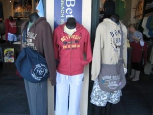

Before Bondi became a BRAND…
– you could buy pies and cream puffs from the Flying Pieman at 3.30 in the morning
– there were 3 petrol stations on Campbell Parade
– the Astra was a grungy pub renowned for being somewhere you could always score
– you’d have ‘eyeballs’ at ‘the concrete’
– you could buy shawarmas at 3.00 in the morning in Hall Street
– there were only about 3 cafes you could hang out in… The Gelato Bar , Positive Vibrations and Cafe 729 and if you travelled to Rose Bay, there was Grandfather’s Moustache
– being a Bondi fashionista meant wearing a sloppy joe
– you could go to Valissis’ and play pinnies and grab a burger and a milkshake
– the 322 bus route – which went from Rose Bay wharf to Bondi Beach – still ran and terminated at South Bondi at the entrance to Queen Elizabeth Drive
– there was a strong local and transient population of Maoris living in Bondi
– you could drive up to the Dover Heights Bowling Club late at night and take in the lights of Bondi from the Heights
– there was “unauthorised” grafitti along the walls of the promenade, which said things like “Bondi Chicks Go Off”
– you could park in the middle of Campbell Parade FOR FREE between Lamrock Avenue and Beach Rd
I would love for more to be added to this list so please go for it…
]]>